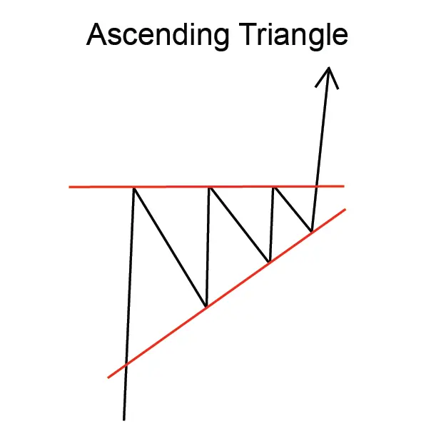
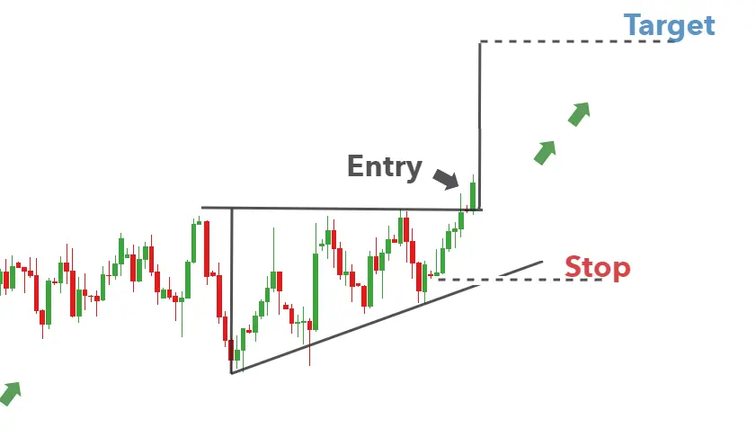

"Ascending Triangle पैटर्न" एक सतत चार्ट पैटर्न है जो एक उभारते हुए रुझान के दौरान बनता है।
यह पैटर्न एक त्रिभुज के रुप में दिखाई देता है जिसमें बढ़ती मात्राएँ और स्थिर अवरोधन होती है,
इसलिए इसे इस नाम से जाना जाता है।
"Ascending Triangle पैटर्न" एक शक्तिशाली उभारते हुए रुझान का संकेत देता है, और ट्रेडर्स
आमतौर पर इसे व्यापार के अवसर के रूप में इस्तेमाल करते हैं।
पैटर्न में प्रवेश करने के लिए, ट्रेडर्स आमतौर पर त्रिभुज के ऊपर 'ब्रेकआउट' की खोज करते हैं,
जो त्रिभुज की ऊँचाई के बराबर होती है।
त्रिभुज की लंबाई, त्रिभुज के निचले भाग से शीर्ष तक की मात्रा होती है।
त्रिभुज की चौड़ाई, वह समय सीमा होती है जब त्रिभुज बनता है।
"Ascending Triangle पैटर्न" एक विश्वसनीय व्यापार पैटर्न नहीं है, हालांकि यह एक शक्तिशाली
उभारते हुए ट्रेंड का संकेत देता है, और ट्रेडर्स आमतौर पर इसे व्यापार के अवसर के रूप में इस्तेमाल करते हैं।
